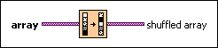

Shuffle 1D Array VI
Owning Palette: Array VIs and Functions
Requires: Base Development System
Rearranges the elements of a 1D array in a pseudorandom order.
This VI uses a uniform shuffle so that every element has an equal chance of ending up in any position of the array.

 Add to the block diagram Add to the block diagram |
 Find on the palette Find on the palette |